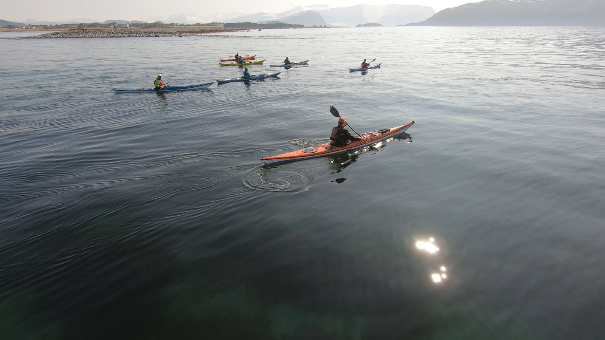

Utdrikningslag & Vennegrupper
Gi den kommende bruden eller brudgommen en opplevelse helt utenom det vanlige. Kajakk, fjord og latter — hva mer trenger du?

Dropp det vanlige — gjør noe minneverdig
De beste opplevelsene skjer utenfor komfortsonen. Kajakk gir gjengen noe ekte, morsomt og annerledes.
- Noe helt annerledes
Glem paintball, go-kart og escape room. Kajakk gir gjengen en opplevelse utenom det vanlige — noe dere faktisk snakker om i årevis etterpå.
- Garantert latter
Når hele gjengen skal mestre kajakken for første gang, er latteren garantert. Det er morsomt, litt nervepirrende og veldig sosialt.
- Fantastiske bilder
Kajakk i Ålesunds vakre farvann gir bilder som faktisk er verdt å dele. Fjordpanorama, kystlandskap og glade fjes i padlevest.
- Felles mestring
Å prøve noe nytt sammen styrker vennskap. Dere heier hverandre frem, ler av tabber og feirer sammen når det sitter.
Dere trenger bare å møte opp
- Introduksjon og grundig sikkerhetsbriefing
- NPF-sertifisert instruktør som guide
- Komplett utstyr: kajakk, åre, padlevest og spruttrekk
- Våtdrakt ved behov (vår, høst)
- Guidet padletur tilpasset gruppens nivå
- Bilder fra opplevelsen (etter avtale)
- Mye latter og gode minner
- Tilpasset akkurat deres gruppe
Hver gruppe er unik, og jeg tilpasser opplegget deretter. Er det et utdrikningslag som vil ha full action og litt konkurranse? Eller en vennegjeng som vil ha en rolig, nytende tur på fjorden? Opplevelsen skreddersys etter dere.
- Tips: Overrask brud/brudgom!
De beste utdrikningslagene er de der hovedpersonen ikke aner hva som venter. Book i hemmelighet og overrask med en opplevelse ingen hadde regnet med.
Det du trenger å vite
- Varighet
2–3 timer, inkludert opplæring
- Antall
4–12 deltakere
- Lokasjon
Valderøya, Ålesund eller Giske
- Erfaring
Ingen erfaring nødvendig
- Vanlige spørsmål
Trenger vi erfaring?
Nei! Jeg starter med en grundig innføring på land, og tilpasser turen etter gruppens nivå. De aller fleste padler fint etter 15 minutter.
Er det trygt?
Absolutt. Alle har padlevest, dere er i skjermede farvann, og instruktøren har lang erfaring. Jeg tar aldri sjanser med sikkerheten.
Hva med dem som er litt nervøse?
Det er helt normalt. Jeg er tålmodig og vant til nybegynnere. Det går i ditt tempo, og de fleste glemmer nervøsiteten etter noen minutter på vannet.
Kan vi kombinere med noe annet?
Ja! Dere kan for eksempel avslutte med mørkepadling på kvelden, eller starte med en kortere padletur før dere går videre til annen aktivitet.
Klar for en uforglemmelig feiring?
Ta kontakt for et uforpliktende tilbud. Jeg hjelper deg med å planlegge en opplevelse gjengen aldri glemmer.
- Trygt og forsvarlig
- Ingen erfaring nødvendig
- Utstyr kan leies